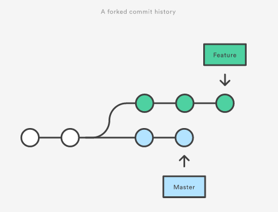
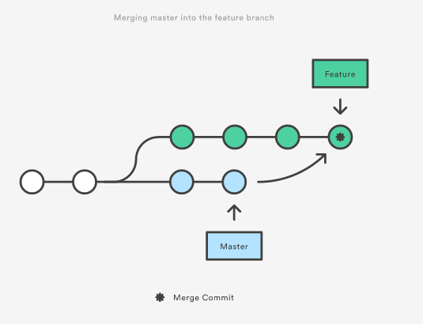
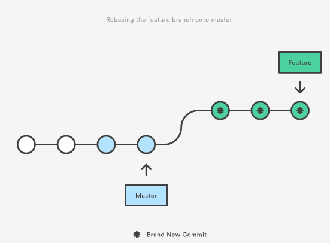
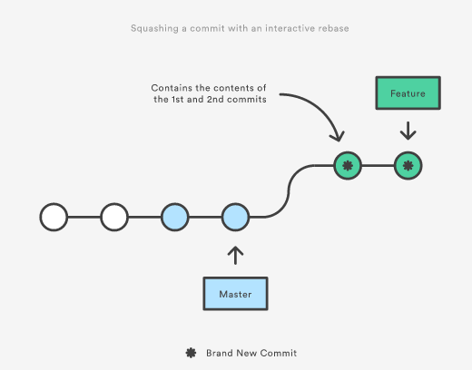
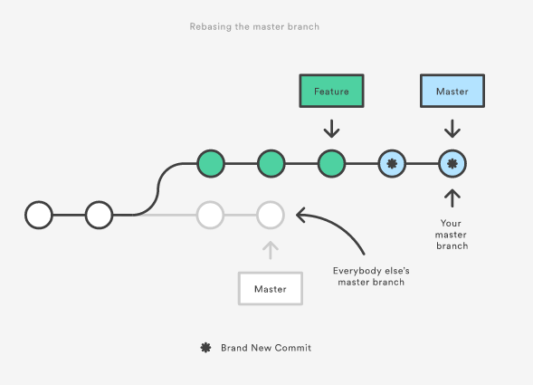
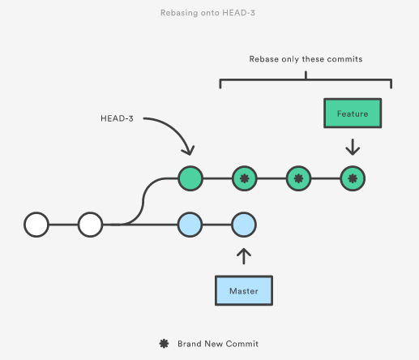

[译]merge vs rebase
git rebase和git merge设计的初衷是解决相同的一件事, 即把一个分支合并到另外一个分支--只是他们两个处理的方式非常不一样.
当你在一个特定的分支开发新功能, 团队的其它成员在master分支工作提交了新的commit. 这个项目的历史就会分叉.

现在假设master中的这个新的commit和你在其它分支中开发的新功能相关, 你想在你的feature分支中包含这个commit, 你有两种选择:merge和rebase.
merge
最简单的办法就是merge master分支到你的feature分支, 使用如下代码:
git checkout feature git merge master
你还可以把这两句命令压缩成一行:
git merge master feature
这会在feature分支创建一个"merge commit",现在你的分支的结构如下:

merge比较好, 因为他是一个无损坏的操作. 存在的分支不会发生什么改变. 这避免了使用rebase时候的许多陷阱.
当feature分支想要和上游的commit一起工作的时候使用merge你的分支会多出一个"merge commit".
rebase
你可以使用rebase将master的修改合并到feature:
git checkout feature git rebase master
会把整个feature分支的commit放到mager分支之后, rebase不会创建一个"merge commit", rebase会为你分支的每个commit创建一个新的commit.

使用rebase主要的一个好处是你的项目历史比较干净. 首先, rebase不再有merge commit. 第二, 从上图来看使用rebase项目的历史不会分叉.
交互式rebase
通常用来在merge一个feature分支到master之前来整理历史.
要开始一个交互式的rebase, 只需要传递-i标记给 git rebase 命令:
git checkout feature git rebase -i master
运行后会打开一个文本编辑器列出所有要move的commit:
pick 33d5b7a Message for commit #1 pick 9480b3d Message for commit #2 pick 5c67e61 Message for commit #3
这个列表展现了rebase运行后你的branch是怎么样的. 通过修改pick命令或者对这些行纪录进行重新的排序, 你可以决定哪种分支历史是你想要的. 例如, 如果第二个commit只是修复了第一个commit的一些小问题, 你可以使用fixup命令把这两个commit压缩成一个commit:
pick 33d5b7a Message for commit #1 fixup 9480b3d Message for commit #2 pick 5c67e61 Message for commit #3
当你保存并关闭这个文本编辑器, Git会按照你的结构执行rebase, 运行后项目历史如下:

消除"merge commit"这种不重要的commit, 能让你的feature历史更易懂一些. 这是git merge所不能的.
rebase的黄金法则
一旦你明白了rebase是怎么回事, 剩下最重要的事情就是搞懂什么情况下不要使用rebase. 其中一条黄金法则是永远不在在一个公共的分支中使用rebase.
想象一下如果你rebase master到feature分支:

rebase会将master的commit移动到feature分支的前面去. 这个问题只发生在你的本地仓储. 其它的开发这还是在开始的master中工作.因为rebase后移动的commit实际上是新的commit, Git会认为你的master分支历史和其它人的master分支分叉了.
如果想要同步这两个master分支, 只有merge他们了, 结果是将有一个额外的merge commit还有两组包含同样修改的commit.
在运行git rebase之前, 你应该问问自己"其他人能看到这个分支吗, 这个分支对团队其他人可见吗?" 如果对其它开发者可见, 你应该要非常谨慎多想想是否有一个不会破坏结构的方法(例如git revert).
Force push
如果你尝试把rebase后的master push到远程仓储, Git会阻止你的push, 因为和远程仓储的master分支有冲突. 这个时候你可以使用force push来强制push:
git push --force
这会用你的仓储的master完全覆盖远程仓储的master. 因此你这样做的时候要非常小心, 这会给团队的其它成员带来极大的困扰.
工作流演示
local cleanup
周期性的执行交互式的rebase, 可以让你的feature分支的每一个commit更加聚合、更加有意义.
当调用git rebase的时候, new base可以有两个选择: 一个是feature的父分支(例如 master), 另一个是你feature分支中的之前的commit. 后者当你需要fix最近的commits的时候非常管用. 下面的命令会运行一个对最近3个commit的一个交互式rebase.
git checkout feature git rebase -i HEAD~3
指定HEAD~3做为新的base, 不会移动分支--只是交互的重写最近的3个commit. 注意了上游的修改不会放到你的feature分支来.

如果你想重写整个feature, 可以使用git merge-base命令来查找feature分支最初的base. 下面的命令会返回最初base的commit ID, 可以把他传给git rebase:
git merge-base feature master